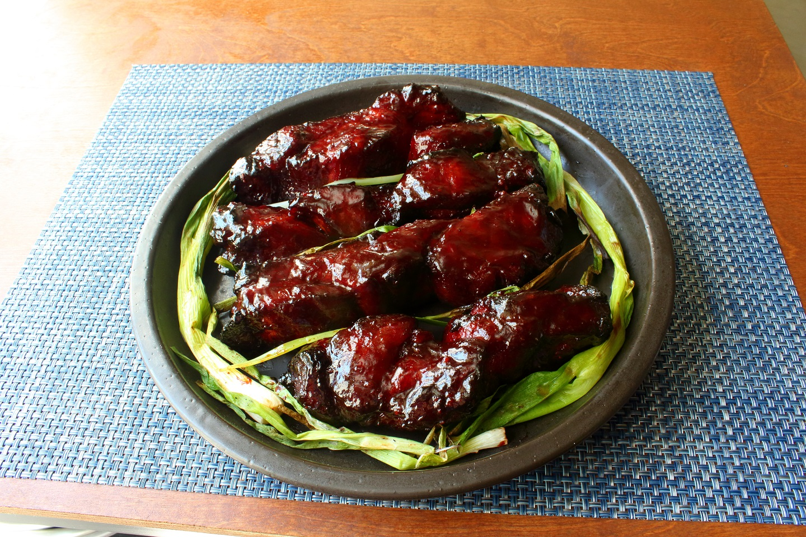

Char-Siu

If you've never had Char Siu before, if it's made right, it's one of the most tender and juicy balances of savory, sweet pork you might ever have. It's got umami from various ingredients (like fermented bean curd, hoisin, oyster sauce), a bit zest from wines, and sweetness from brown sugar and honey.
Ingredients
⅔ cup soy sauce
½ cup honey
½ cup Chinese rice wine (or sake or dry sherry)
⅓ cup hoisin sauce
⅓ cup ketchup
⅓ cup brown sugar
4 cloves garlic, crushed
1 teaspoon Chinese five-spice powder
½ teaspoon freshly ground black pepper
¼ teaspoon cayenne pepper
⅛ teaspoon pink curing salt (Optional)
1 (3 pound) boneless pork butt (shoulder)
1 teaspoon red food coloring, or as desired (Optional)
1 teaspoon kosher salt, or to taste
.
.
.
.
Method
Step 1:
Place soy sauce, honey, rice wine, hoisin sauce, ketchup, brown sugar, garlic, five-spice powder, black pepper, cayenne pepper, and curing salt in a saucepan. Bring to a boil on high heat; reduce heat to medium-high. Cook for 1 minute. Remove from heat. Cool to room temperature.
Step 2:
Cut pork roast in half lengthwise. Cut each half again lengthwise forming 4 long, thick pieces of pork.
Step 3:
Transfer cooled sauce to a large mixing bowl. Stir in red food coloring. Place pork sections into sauce and coat each piece. Cover with plastic wrap and refrigerate 4 to 12 hours.
Step 4:
Preheat grill for medium heat, 275 to 300 degrees F (135 to 150 degrees C) and lightly oil the grate. Line a baking sheet with parchment paper.
Step 5:
Remove sections of pork from marinade and let excess drip off. Place on prepared baking sheet. Sprinkle with kosher salt to taste.
Step 6:
Transfer pork sections to grate over indirect heat on prepared grill. Cover and cook about 45 minutes. Brush with marinade; turn. Continue cooking until an instant-read thermometer inserted into the center reads 185 and 190 degrees F, about 1 hour and 15 minutes more. Do not use any more marinade on cooked meat until after you boil it.
Step 7:
Place leftover marinade in saucepan; bring to a boil; let simmer 1 minutes. Remove from heat. Now you can use it to brush over the cooked pork.